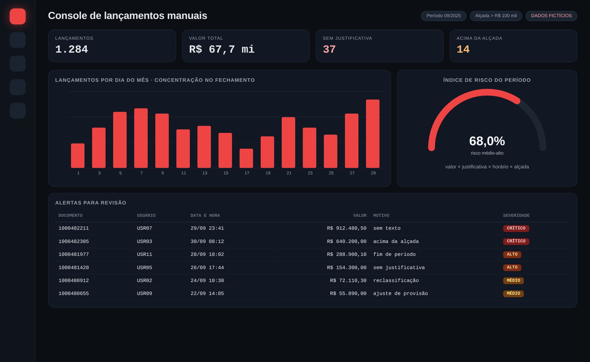

Tela de demonstração com dados fictícios
01
Lógica do negócio
02
Como resolvi com dados
01
Extração
Documentos do razão no período, com usuário, tipo, data, valor e texto.
02
Filtro
Isolo o que é lançamento manual pelo tipo de documento e pela origem.
03
Classificação de risco
Pontuo por valor, falta de texto, horário e alçada.
04
Destaques
Separo os sem justificativa e os acima da alçada.
05
Entrega
Console de revisão e evidência de controle em Excel.
03
Tecnologias utilizadas
Fontes de dados
SAP (extração do razão)
Bancos e SQL
SQL Server (consultas)pandas
Processamento
Pythonpandas
Interface
Power BIStreamlit
Entrega
Evidência de controle (Excel)
04
Funcionalidades
Distribuição por dia do mês e por usuário
Índice de risco do período
Alertas por severidade
Pronto para evidência de controle
05
IA aplicada neste projeto
Como usei IA
Cenários de lançamentos no fim do período e simulação de usuários atípicos para testar os alertas.

Miguel Vinicius Moura Martins
Defini a regra de negócio, modelei os dados, validei os números contra o processo manual e desenvolvi a ferramenta com apoio de IA.
Controles internosAuditoriaAnálise de riscoSQLPythonpandasPower BI